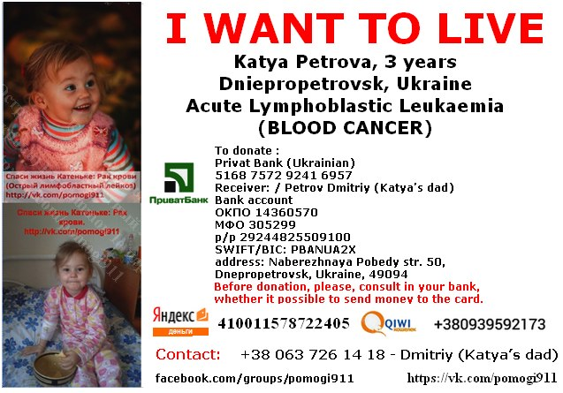

Katya Petrova was diagnosed with blood cancer on 24th on December. She requires long-term treatment in hospital (at least 9 months) which will be followed by rehabilitation at home (no less than 1 year). Her doctors say that her chances for full recovery are very high – 70-95%. However, it is impossible to predict the amount of money that will be needed for all her treatment. All medication is very expensive (especially if it’s imported) and Katya’s family can not afford to buy it all themselves.
Katya is only 3 years old and she has suffered from poor health ever since she was born. She has problems with her kidneys and her heart. Two months before she was diagnosed with cancer, she was frequently ill. During this time her parents started to notice bruises appearing on her body. Katya was also getting tired quickly, had pain in her legs and a high temperature so her parents decided to take her to see a doctor. On 19th of December Katya was admitted to a specialist hospital in Dnipropetrovsk and on 24th December her tests came back which came back with heartbreaking results - Acute Lymphoblastic Leukaemia. She had her first session of chemotherapy on 31st of December to which her weak body responded badly to. She was not able to eat as her digestive system was not working at all so she has to be on drip feeds which are not cheap in Ukraine. She lost 2 kilos of weight. On 9th January she felt bad and had to be moved into intensive care where she stayed for a few days. Since then, her condition has now stabilised and she is out of intensive care. Her stomach is slowly starting to work but her doctors don’t know yet when she will be ready for a second round of chemotherapy.
Katya’s parents are not wealthy people. Her mum works in a pet shop and her dad is a car mechanic. Their incomes are very modest (the average monthly salary in Ukraine is 3,500 Hryvnia /£145). During the first two weeks, with help of family and friends, they have already spent 15,000 Hryvnia/£600 for medication and tests (most of which are not free in Ukraine). This is why they have no other option as to ask for help! Please make a donation! This little girl wants to fight her disease! A couple of pounds is nothing but if a 100 people donate then this will be hundreds of pounds!
